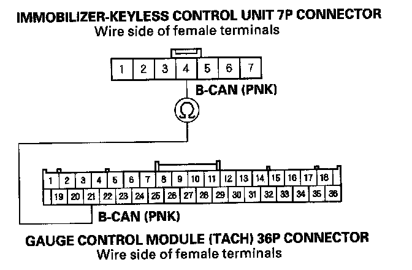

B1906
DTC B1906: Immobilizer-Keyless Control Unit Lost Communication with Gauge Control Module (A/T Message)NOTE: If you are troubleshooting multiple DTCs, be sure to follow the instructions in B-CAN System Diagnosis Test Mode A.
1. Clear the DTCs with the HDS.
2. Turn the ignition switch OFF, and then back ON (II).
3. Wait for 6 seconds or more.
4. Check for DTCs with the HDS.
Is DTC B1906 indicated?
YES - Go to step 5.
NO - Intermittent failure, the gauge control module is OK at this time. Check for loose or poor connections at the gauge control module (tach) 36P connector and at the immobilizer-keyless control unit 7P connector.
5. Turn the ignition switch OFF, and then back ON(II).
6. Select the BODY ELECTRICAL menu, then enter the UNIT INFORMATION.
7. Check the condition of the gauge control module (tach) from the CONNECTED UNIT list.
Is NOT AVAILA8LE indicated?
YES - Go to step B.
NO - Replace the immobilizer-keyless control unit.
8. Do the gauge control module (tach) input test.
Are all inputs OK?
YES - Go to step 9.
NO - Repair the faulty input, then recheck the DTCs.
9. Disconnect the immobilizer-keyless control unit 7P connector.
10. Disconnect the gauge control module (tach) 36P connector.

11. Check for continuity between the immobilizer keyless control unit 7P connector No.4 terminal and the gauge control module (tach) 36P connector No. 21 terminal.
Is there continuity?
YES - Replace the gauge control module (tach).
NO - Repair an open in the wire between the immobilizer-keyless control unit and the gauge control module (tach).